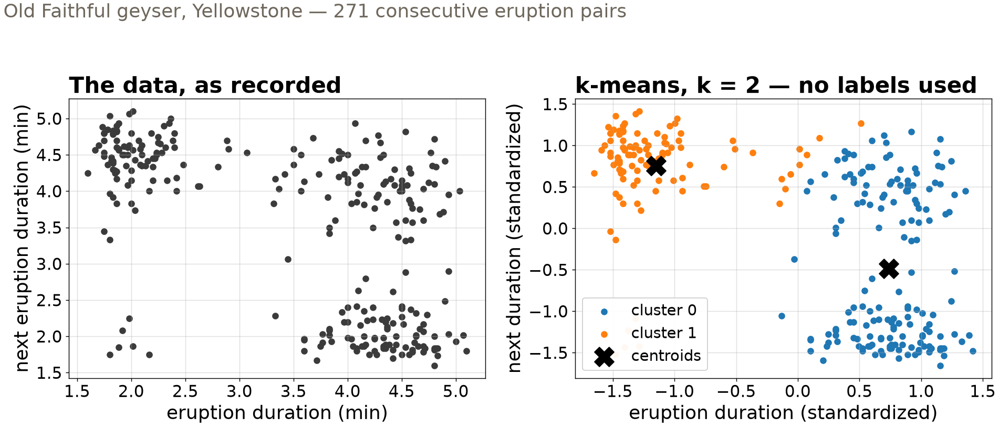
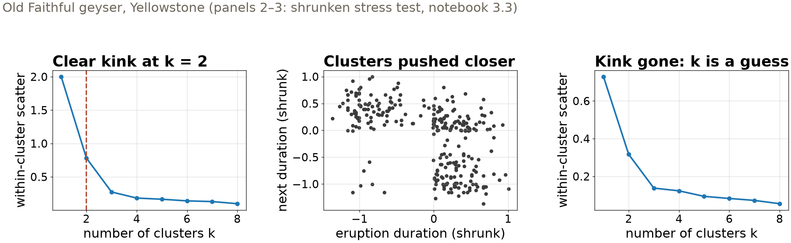
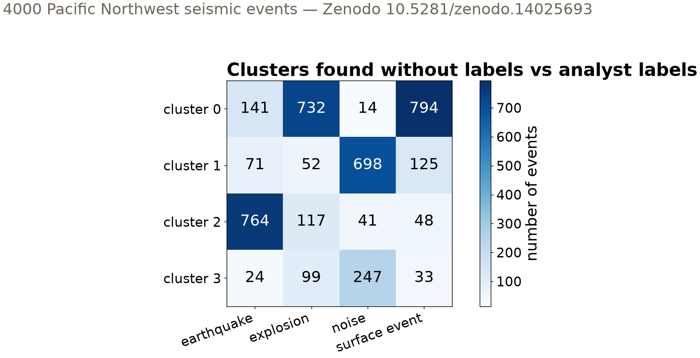

Session 13 · Wed Oct 28 · Book section 3.3
🌀
Nobody labeled the Argo profiles. Nobody labeled the geyser record either.
Which groups are really in your data — and how would you know?
Reading: 3.3 Clustering
✓ Clustering as discovery: unsupervised grouping of earthquake spectra revealed cyclic source changes tied to injection at The Geysers.
Holtzman, B. K., Paté, A., Paisley, J., Waldhauser, F., & Repetto, D. (2018). Machine learning reveals cyclic changes in seismic source spectra in Geysers geothermal field. Science Advances, 4, eaao2929.
✓ Method choice matters: PCA and hierarchical clustering head-to-head on volcano seismic spectra — different tools see different regimes.
Unglert, K., Radić, V., & Jellinek, A. M. (2016). Principal component analysis vs. self-organizing maps combined with hierarchical clustering for pattern recognition in volcano seismic spectra. Journal of Volcanology and Geothermal Research, 320, 58–74.
✗ The elbow ritual under fire: the field’s default way of choosing k picks wrong — a direct argument for better diagnostics.
Schubert, E. (2023). Stop using the elbow criterion for k-means and how to choose the number of clusters instead. ACM SIGKDD Explorations Newsletter, 25(1).
Clustering has produced real geoscience discoveries — and its default rituals are under active critique.

The regimes are visible before any algorithm runs — k-means only formalizes what the geometry already says.
Choosing the distance is choosing what “similar” means — a scientific decision, not a default.
Cheap, fast, everywhere — and never guaranteed to find the best partition. Restart it.

Diagnostics are suggestive, never proof: the kink at k = 2 vanishes when the regimes blur — and the data do not warn you.
0.56 silhouette score — Old Faithful, k = 2
Per sample: (nearest-other-cluster distance − own-cluster distance) / the larger of the two. Ranges −1 (wrong cluster) through 0 (overlapping) to +1 (tight, well separated); the score is the average.
One number for cohesion vs separation — under this distance, on these features. Another lens, not a verdict.

Unaided, k-means finds earthquakes and noise; explosions and surface events share a cluster — shallow sources look alike. V-measure 0.38 against the analyst labels.
| Method | Core idea | You choose | Seismic-exercise example |
|---|---|---|---|
| k-means | minimize within-cluster Euclidean scatter | k, feature scaling | 4 clusters in 4000 events |
| Agglomerative | merge nearest pairs; cut the tree at a height | distance, linkage, cut | dendrogram → cluster IDs |
| PCA, then cluster | compress correlated features first | number of components | 61 features → 15 PCs (80% var.) |
| Diagnostics | silhouette, elbow; label-based scores if truth exists | which lens to trust | V-measure 0.38 vs analysts |
Every row hides a scientific choice — distance, k, linkage, components. The algorithm never makes it for you.
pixi run jupyter lab → 3.3_clustering.ipynbCh 2 quiz closes today · Fri: rare events, honest metrics (3.4) — project proposals due Fri
ESS 469/569 · Machine Learning in the Geosciences · Autumn 2026